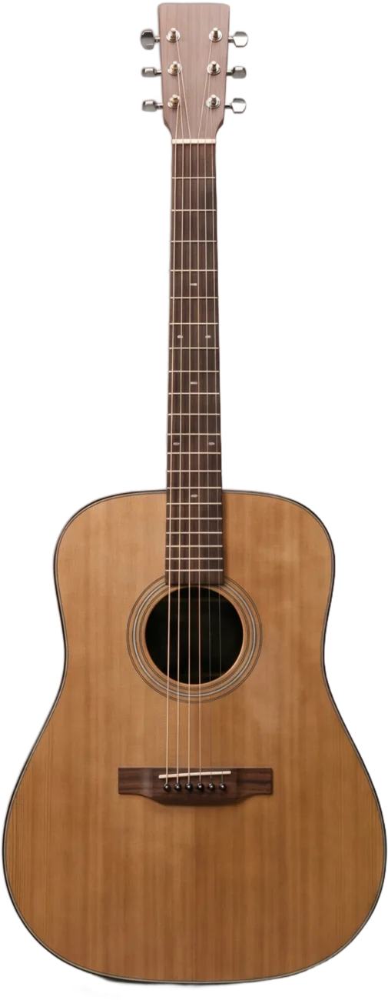
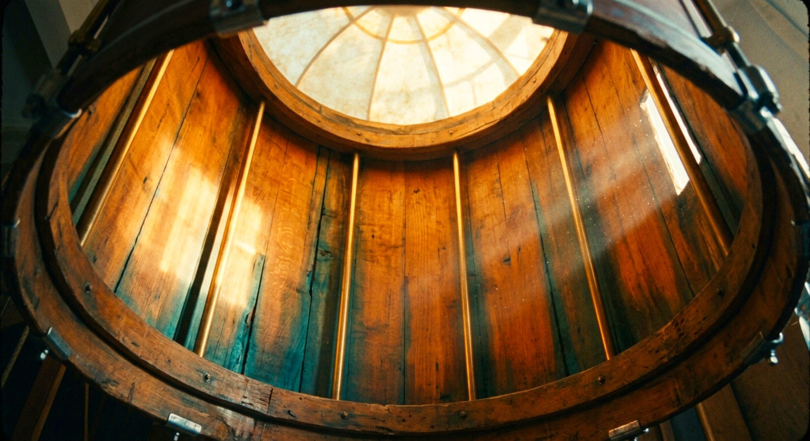
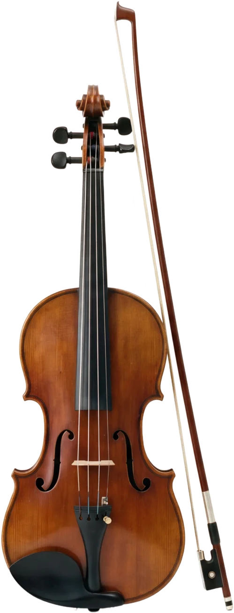

Mezzo School of Music · Coimbatore
Every instrument is a room.
Piano, keyboard, guitar, violin, ukulele, drums and voice — taught by one teacher, in one place, on Thadagam Road.

What is taught
Seven instruments. One teacher.
Not a timetable of visiting tutors. One musician who plays all of them, and teaches each child himself.

When
Six days a week.
Classes are scheduled around school hours, and every child keeps the same slot each week.

Who teaches
Dr. R. Santhana Krishnan
Director and Tutor. He takes every class at Mezzo himself — which is why the school stays small, and why he knows what each child played last week.
Come and learn.
A trial class costs nothing and takes half an hour. Bring the child; the instrument is here.
Thadagam Road, Coimbatore, Tamil Nadu
Monday to Friday 3–8 pm · Saturday 10 am–8 pm
mezzoschoolofmusic.in